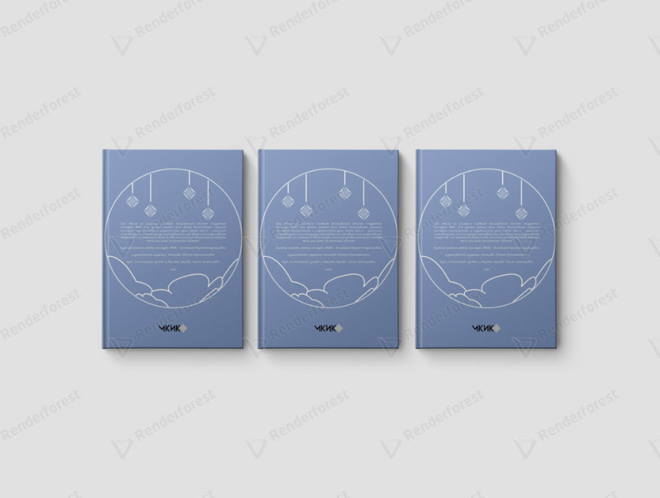
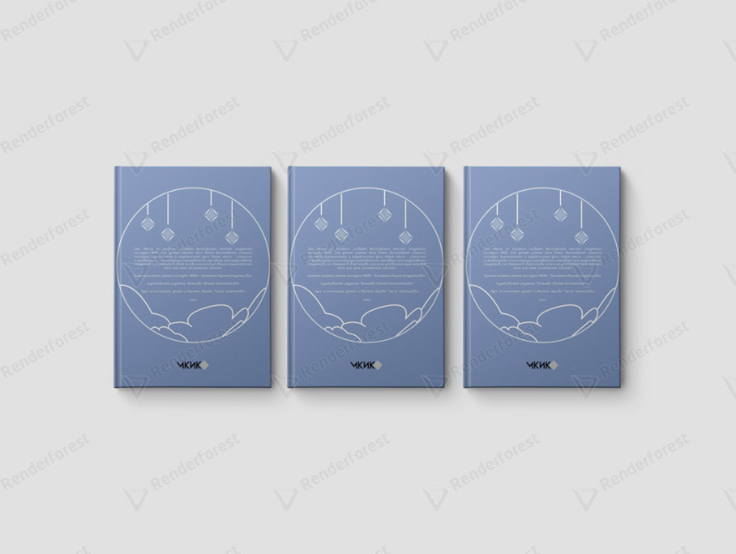
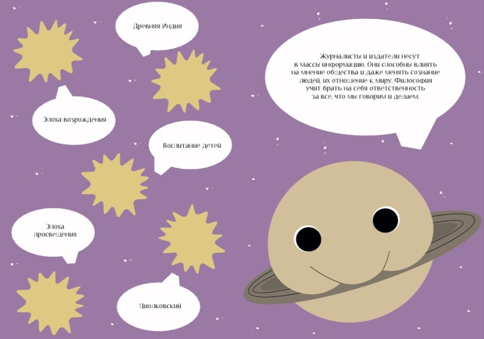
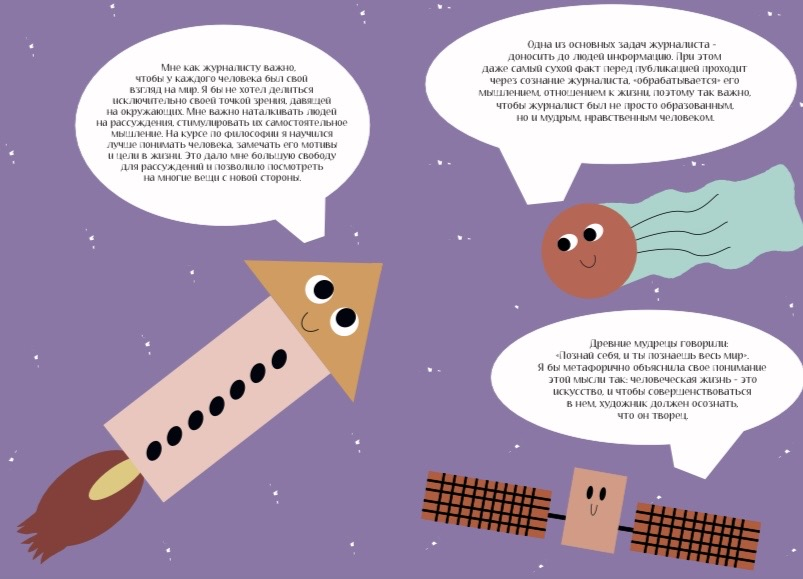

Мысли из космоса
Зин на тему философии
Для данной работы были взяты высказывания учащихся колледжа журналистики и издательского дела. Кажая мысль - уникальна и неповторима, а иллюстрации показывают то, как автор зина представялет студентов с их мнением в своей голове, используя для визуализации небесные тела или иные космические объекты.
 